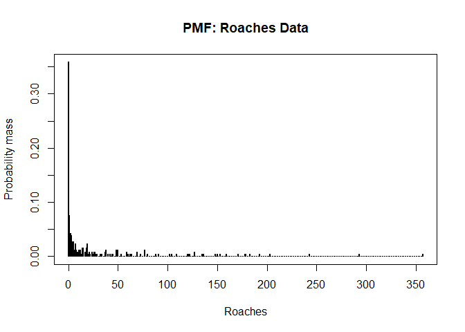
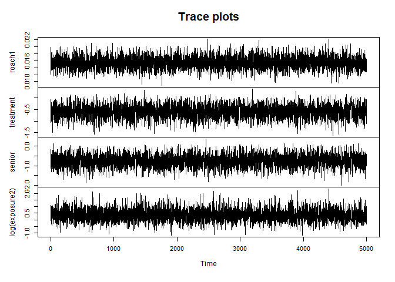
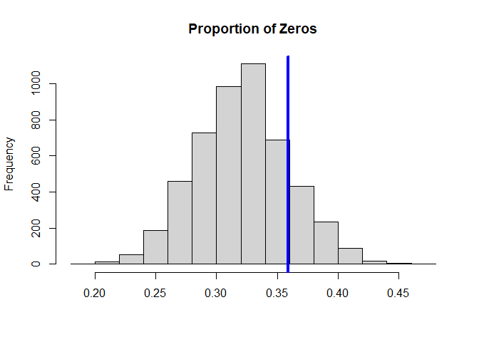

Background: integer-valued data
Integer-valued or count data are common in many fields. Frequently, integer-valued data are observed jointly with predictors, over time intervals, or across spatial locations. Integer-valued data also exhibit a variety of distributional features, including zero-inflation, skewness, over- and underdispersion, and in some cases may be bounded or censored. Flexible and interpretable models for integer-valued processes are therefore highly useful in practice.
As an illustration, consider the roaches data from Gelman and Hill (2006). The response variable, yi, is the number of roaches caught in traps in apartment i, with i = 1, …, n = 262.
# Source: http://mc-stan.org/rstanarm/articles/count.html
data(roaches)
# Roaches:
y = roaches$y
# Function to plot the point mass function:
stickplot = function(y, ...){
js = 0:max(y);
plot(js,
sapply(js, function(js) mean(js == y)),
type='h', lwd=2, ...)
}
stickplot(y, main = 'PMF: Roaches Data',
xlab = 'Roaches', ylab = 'Probability mass')
There are several notable features in the data:
- Zero-inflation: 36% of the observations are zeros.
- (Right-) Skewness, which is clear from the histogram and common for (zero-inflated) count data.
- Overdispersion: the sample mean is 26 and the sample variance is
A pest management treatment was applied to a subset of 158 apartments, with the remaining 104 apartments receiving a control. Additional data are available on the pre-treatment number of roaches, whether the apartment building is restricted to elderly residents, and the number of days for which the traps were exposed. We are interested in modeling how the roach incidence varies with these predictors.
There are two main modeling frameworks for this kind of data:
Poisson and extensions: the Poisson distribution is a valid count-valued distribution, and may incorporate predictions within a generalized linear modeling (GLM) framework. However, the Poisson distribution has limited modeling flexibility, which restricts practical utility in many applications. Extensions such as the zero-inflated Poisson, the negative-binomial, and the Conway-Maxwell distribuiton seek to enhance flexibility by adding parameters. While successful in some cases, these approaches require estimation of each additional parameter, which presents challenges especially in the presence of predictors or other (temporal or spatial) dependence.
Transformed Gaussian: in applied settings, it is perhaps more common to simply ignore the discrete nature of the data and apply continuous data models. For example, one might consider the transformed regression model
$$ z_i = \log(y_i + 1), \quad y_i = x_i'\beta + \epsilon_i, \quad \epsilon_i \stackrel{iid}{\sim}N(0, \sigma^2) $$ The transformation helps model the skewness often found in count data, while the regression model incorporates a simple and well-known continuous data model. However, this approach has two major flaws: (i) the transformation zi = log (yi+1) requires the inclusion of an artificial constant to accommodate yi = 0, which is arbitrary and may introduce bias, and more importantly (ii) the implied data-generating process is not integer-valued, which induces a fundamental discrepancy between the data and the model.
Simultaneous Transformation and Rounding (STAR) Models
STAR models build upon the continuous data model to provide a valid integer-valued data-generating process. An example STAR model for linear regression is as follows: The latent data yi* act as a continuous proxy for the count data yi, which is easier to model yet has a simple mapping via the floor function to the observed data. The latent data yi* are transformed to zi*, as in common practice, and modeled using Gaussian linear regression. This model inherits the same structure as before, but the data-generating process is now integer-valued.
More generally, STAR models are defined via a rounding operator h, a (known or unknown) transformation g, and a continuous data model Πθ with unknown parameters θ: Importantly, STAR models are highly flexible integer-valued processes, and provide the capability to model (i) discrete data, (ii) zero-inflation, (iii) over- or under-dispersion, and (iv) bounded or censored data.
We focus on conditionally Gaussian models of the form $$ z^*(x) = \mu_\theta(x) + \epsilon(x), \quad \epsilon(x) \stackrel{iid}{\sim}N(0, \sigma^2) $$ where μθ(x) is the conditional expectation of the transformed latent data with unknown parameters θ. Examples include linear, additive, and tree-based regression models.
Estimation, inference, and prediction for STAR are available for both Bayesian and frequentist models. Implementation in both cases is provided in the rSTAR package.
Frequentist inference for STAR models
Frequentist (or classical) estimation and inference for STAR models is provided by an EM algorithm. Sufficient for estimation is an estimator function which solves the least squares (or Gaussian maximum likelihood) problem associated with μθ—or in other words, the estimator that would be used for Gaussian or continuous data. Specifically, estimator inputs data and outputs a list with two elements: the estimated coefficients θ̂ and the fitted.values μ̂θ(xi) = μθ̂(xi). The EM algorithm updates the parameters until convergence to the maximum likelihood estimators (MLEs), and is implemented in star_EM:
# Select a transformation:
transformation = 'log' # Log transformation
# transformation = 'np' # Estimated transformation using empirical CDF
# EM algorithm for STAR (using the log-link)
fit_em = lm_star(y ~ roach1 + treatment + senior + log(exposure2),
data = roaches, transformation = transformation)
# Dimensions:
n = nrow(fit_em$X); p = ncol(fit_em$X)
# Fitted coefficients:
round(coef(fit_em), 3)## (Intercept) roach1 treatment senior log(exposure2)
## 1.260 0.015 -0.715 -0.912 0.560Here the log transformation was used, but other options are available; see ?lm_star for details.
Based on the fitted STAR model, we may further obtain confidence intervals for the estimated coefficients using confint:
# Confidence interval for the j=2 column:
j = 2
ci_j = confint(fit_em, level = 0.95,
j = j,
include_plot = FALSE)
print(round(ci_j, 3))## [1] 0.012 0.019
# Confidence for all columns:
ci_all = sapply(1:p, function(j)
confint(fit_em, level = 0.95,
j = j,
include_plot = FALSE))
colnames(ci_all) = colnames(fit_em$X);
rownames(ci_all) = c('Lower', 'Upper')
print(t(round(ci_all, 3)))## Lower Upper
## (Intercept) 0.792 1.728
## roach1 0.012 0.019
## treatment -1.262 -0.176
## senior -1.526 -0.312
## log(exposure2) -0.557 1.700Similarly, p-values are available using likelihood ratio tests, which can be applied for individual coefficients,
H0 : βj = 0 vs H1 : βj ≠ 0
or for joint sets of variables, analogous to a (partial) F-test:
H0 : β1 = … = βp = 0, vs. H1 : βj ≠ 0 for some j = 1, …, p
# p-value for *any* effects
# Note that the null model estimator *does not* include any X:
# P-values:
print(pvals(fit_em))## (Intercept) roach1 treatment senior
## 1.705446e-06 2.980645e-16 1.027886e-02 3.090894e-03
## log(exposure2) Any linear effects
## 3.263339e-01 1.078662e-17Bayesian inference for STAR models
For a Bayesian model, STAR requires only an algorithm for initializing and sampling from the posterior distribution under a continuous data model. More specifically, posterior inference under STAR is based on a Gibbs sampler, which augments the aforementioned continuous sampler with a draw from [z*|y,θ]. When Πθ is conditionally Gaussian, [z*|y,θ] is a truncated Gaussian distribution.
As an illustration, consider the Bayesian linear regression model With STAR and a log transformation, posterior samples for (β,σβ,σ) are obtained using star_MCMC as follows:
X = model.matrix(y ~ roach1 + treatment + senior + log(exposure2),
data = roaches)
# Dimensions:
n = nrow(X); p = ncol(X)
fit_mcmc = star_MCMC(y = y,
sample_params = function(y, params)
sample_params_lm(y, X, params),
init_params = function(y)
init_params_lm(y,X),
transformation = 'log', verbose = FALSE)The function sample_params computes a single draw of the parameters params conditional on continuous data. Here, the update is for Bayesian linear Gaussian regression, which samples from the posterior of (β,σβ,σ) conditional on the continuous latent data z*. The function init_params simply initializes the parameters params. Posterior expectations and posterior credible intervals are available as follows:
## beta1 beta2 beta3 beta4 beta5 sigma_beta1
## 1.126 0.015 -0.597 -0.744 0.337 1000.000
## sigma_beta2 sigma_beta3 sigma_beta4 sigma_beta5
## 0.915 0.915 0.915 0.915
# Credible intervals for regression coefficients
ci_all_bayes = apply(fit_mcmc$post.coefficients[,1:p],
2, function(x) quantile(x, c(.025, .975)))
# Rename and print:
colnames(ci_all_bayes) = colnames(X); rownames(ci_all_bayes) = c('Lower', 'Upper')
print(t(round(ci_all_bayes, 3)))## Lower Upper
## (Intercept) 0.580 1.632
## roach1 0.012 0.019
## treatment -1.154 -0.043
## senior -1.396 -0.085
## log(exposure2) -0.497 1.327We may further evaluate the model based on posterior diagnostics and posterior predictive checks on the simulated versus observed proportion of zeros:
# Posterior draws of the regression coefficients:
post.coef = fit_mcmc$post.coefficients[,2:p]
colnames(post.coef) = colnames(X)[2:p]
# MCMC diagnostics:
plot(as.ts(post.coef), main = 'Trace plots', cex.lab = .75)
# (Summary of) effective sample sizes across coefficients:
getEffSize(post.coef)## Min. 1st Qu. Median Mean 3rd Qu. Max.
## 2981 3404 4100 3987 4682 4767
# Posterior predictive check:
hist(apply(fit_mcmc$post.pred, 1,
function(x) mean(x==0)), main = 'Proportion of Zeros', xlab='');
abline(v = mean(y==0), lwd=4, col ='blue')
Additional features in rSTAR
A fixed upper bound,
y_max, with y(x) ≤y_maxfor all xResidual diagnostics in
star_EMLog-likelihood at MLEs in
star_EMfor model comparison and information criteria (AIC or BIC)Customized functions for STAR with gradient boosting
gbm_starand STAR with random forestsrandomForest_starFitted values ŷ(x) = E{y(x)} and posterior samples from [ŷ(x)|y] in
star_MCMCSamples from the integer-valued posterior predictive distribution [ỹ(x)|y] in
star_MCMC, where ỹ denotes future or unobserved dataCustomized samplers for Bayesian additive models
sample_params_additiveand linear models with horseshoe priorssample_params_lm_hsWAIC and pointwise log-likelihoods for (Bayesian) model comparisons
A customized STAR model for Bayesian additive regression trees (BART)
bart_star_MCMCPosterior samplers for STAR with unknown and nonparametric transformation g
Monte Carlo samplers for posterior and predictive inference with linear regression and spline regression